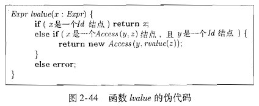
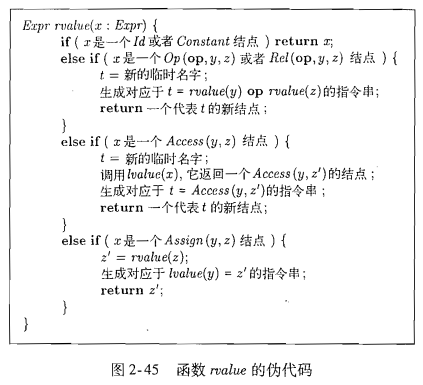
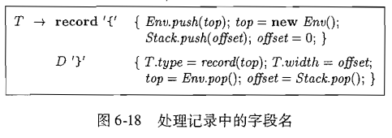
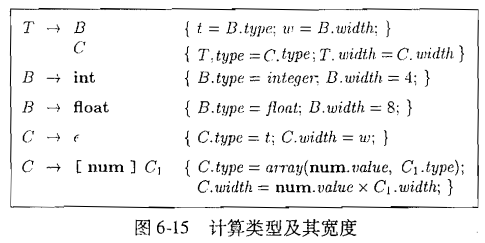
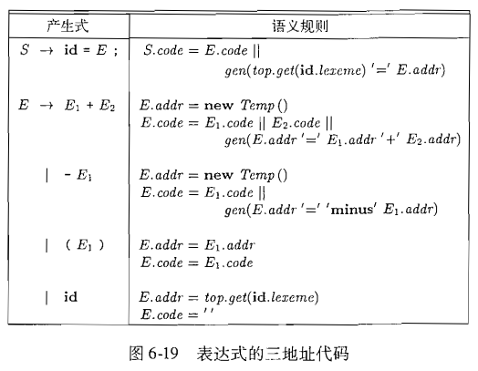
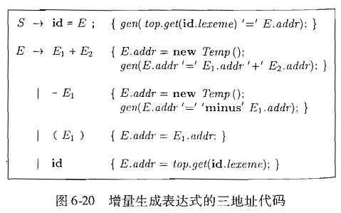
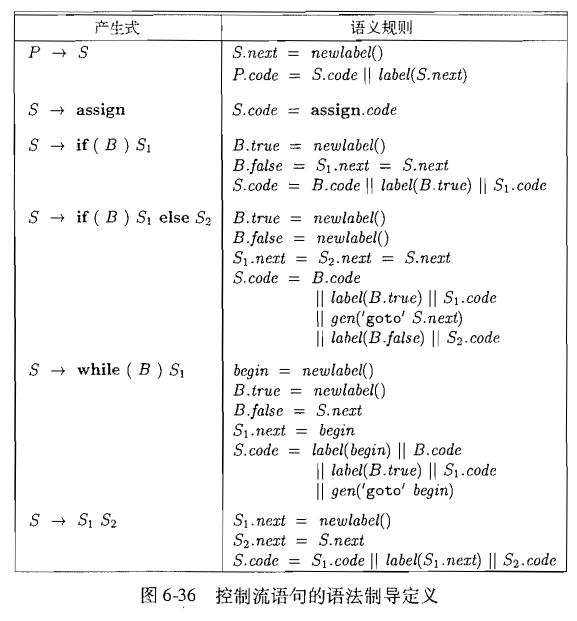
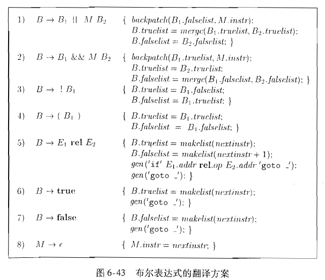
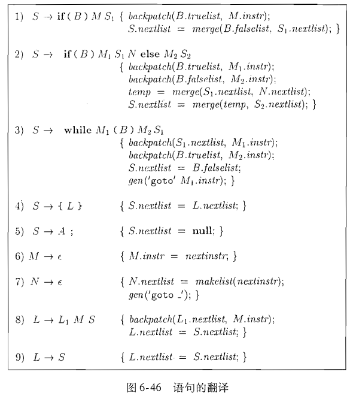
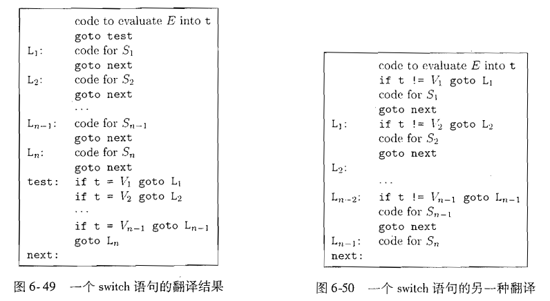

《编译原理》第二版阅读记录
标注:
- ❓ = 不了解的
- ❗️ = 想看的
#Chapter 1. 编译器结构
- CISC & RISC
- 词法分析
- …
#Chapter 2. 简易语法制导翻译器实现
使用java实现的编译器前端
整体流程: 源代码 – 词法分析 – 语法分析 – 中间代码生成 – 三地址代码
#语法
文法 (a.k.a. 上下文无关文法 CFG) 用来描述某一类语言的模式
文法不允许二义性 i.e., 对同一段文本串(终结符号串)有多种解释方式
利用附加规则 (结合性 & 优先级) 消除二义性
#语法制导翻译
语法制导翻译: 在文法产生式上 进行某些逻辑处理 实现翻译
#语法分析
对于任何上下文无关文法，我们都可以构造出一个时间复杂度为的语法分析器，它最多使用的时间就可以完成一个长度为n的符号串的语法分析。
但是现实中往往设计简单的文法 以实现O(n)的语法分析
语法分析方法: 自顶向下 自底向上
#词法分析
词素 lexem
#符号表
符号表一般与编程语言中的作用域(scope)相对应
可以利用最近嵌套规则
#生成中间代码
两种最重要的IR的形式
- 树形表示：包括 语法分析树 和 AST
- 线性表示：尤其是三地址(代)码
三地址码： 或数组形式
lvalue和rvalue伪代码


#Chapter 3. 词法分析
- 正则表达式
- Lex
- 自动机, DFA & NFA
- NFA 转 DFA
#Chapter 4. 语法分析
- 上下文无关文法
- LL(1) 文法
- LR 语法分析
- LALR
- Yacc
#Chapter 5. 语法制导翻译
- 语法制导定义 SDD
- 合成属性 继承属性
- 语法制导翻译 SDT
#Chapter 6. 中间代码生成
本章关注怎么从AST生成IR，主要方法就是灵活运用SDT
C常常被用作IR
#6.1 DAG表示语法树
好处：自动提取公共子表达式，适合优化
#6.2 三地址(代)码
两个基本元素：
- 地址
- 变量名字
- 常量
- 临时变量
- 指令
三地址码的实现：
- 结构体/对象
- 四元式
quadruple：result = arg1 op arg2 - 三元式
triple：每条指令隐含产生一个结果，参数是指令下标 - 间接三元式
indirect triple：解决三元式不适合在中间插入删除的问题
静态单赋值形式 SSA：
- 静态单赋值形式是另一种IR的形式
- 需要Phi函数解决多分支问题
- 三地址码 => SSA 转换方法
#6.3 类型和声明
类型表达式 type expression：
- 表示编程语言中的类型的代数系统
- 是树形结构
- 一个典型的类型表达式系统：
- 基本类型 boolean char integer float void
- 类名
- 数组类型
- 记录类型
- 函数类型
- 笛卡儿积(一般是列表或元组)
类型 结构等价 与 名字等价：
- ❓没看懂
类型的翻译：

局部变量的存储布局：
- 类型宽度：类型的一个对象所需的存储单元数量
- 计算宽度的SDT方案： 
- 暂时不考虑内存对齐要求
- 根据类型可以给变量分配相对地址
- 分配地址的SDT方案
#6.4 表达式翻译方法

增量翻译：直接输出code而非存储起来

数组的翻译
#6.5 类型检查
- 类型检查：给源程序每个部分一个类型表达式，然后确定这些表达式是否符合一组逻辑规则。
- 能够发现程序中的错误
- TODO: ❓
#6.6 控制流
- 直接参考就行了 
#6.7 回填 & 6.8 语句翻译 & 6.9 过程翻译
在翻译控制流语句时，经常需要生成向后跳转的跳转指令，到还没有翻译完成的地方。
例如翻译 if (B) S 指令，第一遍翻译时不知道S后面的指令地址，因此就没办法生成goto的目标；对于switch语句问题则更加明显，需要翻译完switch body才能知道跳转的目标。
回填 backpatching 技术是一遍扫描内解决这个问题的一个方法，每个跳转指令在生成时都暂时不指定目标，而是后续回填这个目标。
每个非终结符号新增合成属性：
truelist，falselist记录需要回填的跳转目标nextlist记录下一条指令
辅助函数：
makelist(i)创建一个列表，包含需要回填的指令imerge(p1, p2)合并两个列表backpatch(p, i)把标号i回填到链表p包含的每条指令中
 
goto语句的翻译：
- 为每个label维护一个
patchlist，在知道label的目标之后进行回填即可
break和continue语句的翻译：
- 跟踪循环语句
- 将break语句添加到循环语句的
nextlist中
Switch的翻译：
- 翻译选择
- case数据较少时可以用条件跳转
- 较多时可以使用散列表
- 直接把值映射到下标
- 条件跳转：把分支语句放在开头会不方便
- 可以把跳转块放在末尾
- 也可以边执行边跳转

过程的翻译：
- 三地址码表示函数：
n=f(a[i])翻译成
1 | t_1 = i * 4 |
- 函数类型：s->t
- 符号表：
- 原符号表中增加一个新函数符号；然后压入一个新的函数符号表
- 函数形参可以用类似record字段的方式处理
- 类型检查
- 函数调用
#Chapter 7. 运行时
- 栈
- 堆
- 内存分配
- GC ❗️
#Chapter 8. 代码生成
- 目标机器模型
- 基本块
- 基本代码生成
- 窥孔优化
- 寄存器分配
- 表达式生成优化
#Chapter 9. 机器无关优化
- 数据流分析
- 常量传播
- 冗余消除
- 循环 ❓
- 基于区域的分析 ❓
- 符号分析 ❗️
#Chapter 10. 指令级并行
#Chapter 11. 并行 & 局部性优化
#Chapter 12. 过程间分析
- Datalog ❗️
- 指针分析 ❗️